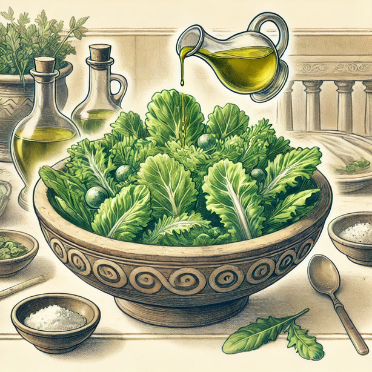

Ancient Roman Food
Boda Chen
chenboda01@gmail.comGATE Project assigned for Boda Chen
Virginia Highland Elementary School
Atlanta, GA, USA
Introduction

Ancient Rome painting depicting eggs, birds and bronze dishes found in the Roman House of Julia Felix
From Wikipedia CC BY-SA 2.0
Staple Foods
Puls (Porridge)
Puls was a thick porridge that was a staple food in ancient Rome.
Bread in Ancient Rome
Panis Quadratus
Fresco showing a piece of bread and two figs, from Pompeii, Naples National Archaeological Museum
From Wikipedia CC BY-SA 2.0
Image generated by DALL-E 3
Meat and Fish
Pork
The most popular meat was pork, especially sausages.Beef was rare and expensive.
Dormice
The Romans also ate dormice, a type of rodent, which were considered a delicacy.This glirarium unearthed in Pompeii, Italy, is a terracotta container used to house dormice.
Chicken and Fish
Chicken and fish were also popular.
Exotic Meat
Exotic meat such as giraffe and flamingo tongue for the elite.From Wikipedia CC BY-SA 2.0
Popular Vegetables
Image generated by DALL-E 3

Image generated by DALL-E 3